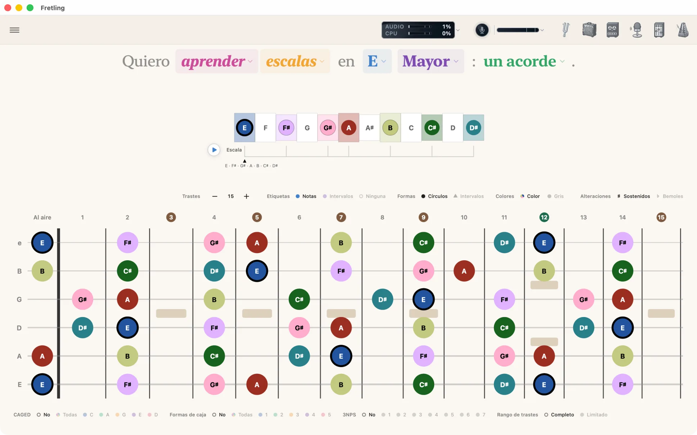
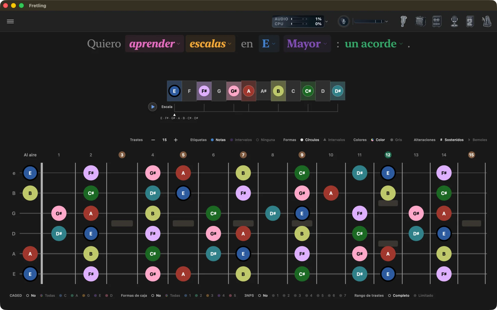

Qué hace
- Aprende escalas, acordes diatónicos y tríadas en cualquier tonalidad, con formas CAGED, cajas de posición y patrones de tres notas por cuerda sobre el mástil.
- Identifica un acorde tocando notas en el mástil o tocándolo frente al micrófono; Fretling clasifica las lecturas.
- Oye todo lo que ves: notas que suenan al tocarlas, reproducción de escalas y acordes con un toque, seis voces de instrumento.
- Practica con un afinador cromático, un metrónomo con caja de ritmos por pasos, un amplificador Neural Amp Modeler y un looper.
Casi todo eso es gratis para siempre. El secuenciador de batería, el amp, el looper, Detección en vivo, el modo Precisión del afinador y las siete escalas avanzadas vienen con el desbloqueo único de Fretling Pro, y están marcados Pro a lo largo de esta guía.
El resto de la guía
Anatomía de la pantalla
Todo se organiza alrededor de un diapasón estable. Una barra fija de controles recorre la parte superior, dos barras de chips enmarcan el mástil y las herramientas de práctica se abren como paneles flotantes que puedes arrastrar fuera del camino.
| Dónde | Qué hay ahí |
|---|---|
| La barra superior | Una banda a lo largo del borde superior del lienzo. El botón de Configuración está en el extremo inicial y desliza la barra lateral hacia adentro; el indicador de rendimiento y la lámpara y el medidor del micrófono vienen después; los seis íconos de herramientas de práctica (afinador, amp, looper, Detección en vivo, mezclador, metrónomo) están en el extremo final. Cada uno abre un panel flotante que se puede arrastrar, minimizar a una tira de una fila o cerrar. Ver Herramientas de práctica. |
| Sobre el mástil | La oración que construyes, una línea de tiempo de la escalaopcional y luego la barra de visualización de marcadores: Trastes, Etiquetas, Formas, Colores, Alteraciones. |
| El mástil | Seis cuerdas, de 12 a 22 trastes (quince por defecto), cada nota de la escala o del acorde dibujada como un marcador. Toca uno para oírlo. |
| Debajo del mástil | Agrupaciones visuales: CAGED, Formas de caja, formas de acorde, tres notas por cuerda, conjuntos de cuerdas en Tríadas, y los interruptores Notas fuera del acorde y Rango de trastes. |


Inicio rápido
- Lee la oración de arriba y toca cualquier palabra coloreada para cambiarla: el verbo (aprender o identificar), el modo (escalas, acordes, tríadas), la nota raízy el tipo de escala.
- Toca notas en el mástil para oírlas. El instrumento viene de Configuración → Audio.
- Usa los chips Etiquetas / Formas / Colores / Alteraciones sobre el mástil para alternar entre nombres de notas y números de intervalo.
- Usa los chips Agrupaciones visuales debajo del mástil para superponer formas CAGED, cajas de posición, formas de acorde o patrones 3NPS sobre lo que estás viendo.
- Abre las herramientas que necesites desde la fila de íconos a la derecha de la barra superior: flotan sobre el diapasón y se pueden arrastrar a un lado, o minimizar a una tira de una fila que mantiene activo su control principal.
Plataformas y requisitos
| Plataforma | Requisito | Notas |
|---|---|---|
| Mac | macOS 15.4 o posterior | Todas las funciones, incluidos el amplificador de guitarra y el looper. Ventana mínima de 1000 × 760. |
| iPad | iPadOS 18.6 o posterior | Horizontal, pantalla completa. Todas las funciones, amp y looper incluidos; usa una interfaz de audio o audífonos para monitorear. |
| iPhone | No compatible | El diseño gira en torno a un mástil ancho; hay una versión para iPhone planeada, pero aún no publicada. |
Fretling funciona por completo en tu dispositivo: sin cuenta, sin analíticas, sin sincronización en la nube. Consulta la política de privacidad.